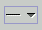

on the toolbar, and name them "Close a
Course" and "Open a Course".
on the toolbar, and name them "Close a
Course" and "Open a Course".
This tutorial consists of 7 screens, each of which is described in a section of
this page:
This tutorial builds the Use Case Diagram of the Enroll.argo project.
(The screenshots in this tour were made with ArgoUML v0.15.4)
Back to ArgoUML Tours
Back to ArgoUML Home
01. The Finished Diagram |
TOC | Next |
This is how the final Use Case diagram of the "Enroll.zargo" example will look when we are finished. Notice in the above diagram that the Explorer (top-left) is in Diagram-centric perspective rather that the default Package-centric perspective.
02. Open the enroll.zargo Project |
Back | TOC | Next |
Open the enroll.zargo project started from the Building a Class Diagram tutorial, and change the Explorer perspective from Package-centric to Diagram-centric (see diagram above).
03. Select the Use Case diagram |
Back | TOC | Next |
In the Explorer (top-left), by double-clicking on "use case diagram", you will bring up the editor pane for your use case diagram. Notice that you now have a different toolbar displayed. In the name field of the Properties tab in the Details pane (bottom-right), you can rename the diagram to "enrollment use cases". Refer to Step #3 of Building a Class Diagram.
04. Add Actors |
Back | TOC | Next |
Add three actors to your diagram by double-clicking on in the toolbar (this is a shortcut that will allow you to add multiple actors without having to go back to the toolbar). Name the actors, from top to bottom, Administrator, Faculty and Student. Refer to Step #4 of Building a Class Diagram for more help.
05. Adding Use Cases |
Back | TOC | Next |
Add two new use cases using on the toolbar, and name them "Close a
Course" and "Open a Course".
06. Adding Associations |
Back | TOC | Next |
Add two new associations using  on the toolbar. For help on naming associations, see Step #8 of Building a Class Diagram.
07. Finish |
Back | TOC |
Now you have all the skills necessary to complete a use case diagram. Refer to the enroll_usecase.zargo example to see the resulting diagram.
Back to ArgoUML Tours
Back to ArgoUML Home